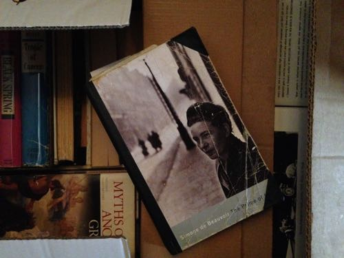

Change Coming

A well-read copy of “The Prime of Life” by Simone de Beauvoir among the boxes.
I have spent the last weeks reading Simone de Beauvoir’s The Prime of Life for the third time. The first time I read it I hadn’t started writing but knew I wanted to start and was waiting and looking for an apartment where I could start. I had left Michigan the year before and had somehow ended up in Rome. De Beauvoir’s book proved to me that I wasn’t mistaken in believing firmly in my independence, in my individualistic search for who and what I am. Reading it now, I’m still blown away by her insistent individualism—this unmistakable sense of knowing that what you’re doing is okay because you’re following what you believe (a belief often difficult to dig to the bottom of).
Now, like then, I’m grateful for how she writes about her persistent goal to be a writer, which seems to go hand in hand with her persistence to get the most out of life. I had forgotten how many bad novels she wrote before publishing She Came to Stay, when she was in her mid-thirties, during the end of World War II. I had forgotten about her long walks through the French countryside, walks that lasted weeks, where she and Sartre would sleep outside under a grove of trees, or she would sleep alone in a hut in the mountains. But I hadn’t really forgotten about the walks or her determination to be a writer because it was these things that I understood the most and found the most reassurance in.
What I wanted was to penetrate so deeply into other people’s lives that when they heard my voice they would get the impression they were talking to themselves.
I read that last night and it is probably the best description of how I feel when I read and read (past tense) de Beauvoir—that I am talking to myself. At any age, such a voice is like a home.
But I haven’t only been reading The Prime of Life these last weeks. I’ve been getting ready to leave Italy, to move to New York City, to begin studying at Columbia University. I have put my books in boxes, gotten rid of lots of stuff and eaten good food and drank good wine with good people whom I won’t see for a while. In two weeks we’ll be there. It is a strange move for me in that I can already picture more or less the structure of my days: studying, going to classes and maybe even working in a bookstore.
Though, of course, I have no idea what this move will bring, what it will change for me and my writing. It is still very much an adventure—moving back to the States after nearly a decade in Europe, going back to university after dropping out 14 years ago, living in New York City. It is very appropriate that I have been reading Simone de Beauvoir before I toss myself into all this. She brings me confidence that I’m not crazy but that I’m simply still searching for who and what I am.
· · · · · · · · · · · · · · · · · · · ·